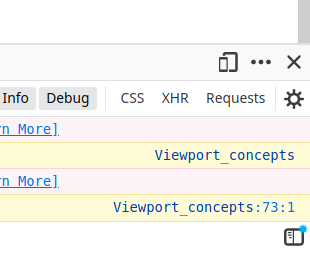
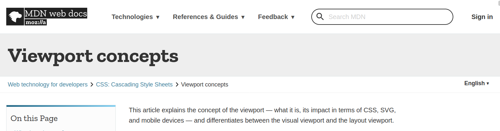

By the end of this class, you should be able to:
Responsive design is a set of design principles that guide how we build websites. A website is "responsive" if it reacts to the features of the device and software viewing it.
At normal browser size, we can see that the page behaves similarly to what we would expect, with a nav bar full of hoverable sub-menus.
We can open Responsive Design Mode by clicking the smartphone icon in the top right corner of the Web Developer panel in Firefox, or the top left corner of the Web Developer panel in Chrome.
This is responsive design. By reflowing our elements to fit the size of the screen, we can make sure that the navigation menu is useable no matter how much screen space we have available.
Our website isn't currently very responsive... What do you think is happening?
Answer: Most mobile devices "emulate" being bigger than they actually are. If you've ever visited a website on a smartphone and seen text that looks "zoomed out", this is why. However, we can tell mobile browsers to stop doing this by setting the "viewport".
The viewport is set using a <meta> tag in the <head>. We set the "name" attribute of the tag to "viewport", and the "content" tag to be a set of instructions for how to manipulate the initial zoom and screen size. Let's set some good defaults for this at the top of the page now.
This gets us a bit closer to a workable website, but we still want to touch up our site a bit more. For example, our navbar still looks messy when it is split up across two lines.
We can fix this using @media css rules. A @media rule lets us surround another rule in a second set of brackets, and describe what features our screen must possess in order for the rules inside to activate. For example:
@media ( max-width: 640px ) {
nav li {
display: block;
width: 100%;
}
}
This @media rule says that the "nav li" styling inside should only apply if we're viewing the website on a screen smaller than 640 pixels wide.
Let's practice this media rule by changing our navbar to a full width vertical list of buttons when the screen is too small.
The @media tag can do more than just screen width.We also have many other useful properties like "orientation" (portrait or landscape) and "pointer" ("coarse" if the user has a touchscreen, "fine" if the user has a mouse or trackpad).
The "print" mediatype is active when a web page is being sent to a printer.
The "screen" mediatype is active when a web page is being displayed on a screen or digital display.
We've now learned the code for making a mobile-specific layout for our webpages. However, what actually makes a website mobile-friendly?
Desktop monitors tend to be locked to a few well-known resolutions. By contrast, mobile devices come in many distinct resolutions and aspect ratios. For this reason, it's important to ensure your website reflows text gracefully even when resolution changes.
Mobile devices most often rely on touch controls. For this reason, navigation and action buttons should be sized appropriately to be easily touched with large fingers. Navigation and accessibility (e.g language selection) also benefit from being modal (i.e full-screen fixed-position that require a press to pass through.)
Mobile aspect-ratios tend to be very tall and narrow. For this reason, mobile sites tend to be vertically oriented, and avoid the use of excessive columns or grids. When grids are necessary, they are often restyled into a vertical orientation.
Screen space on a mobile device is at a premium. Mobile friendly layoutsstretch to use all space available. This means keeping padding visible, but minimized, and avoiding the use of percentages that aren't close to 100 or 0 for measurements related to text element sizing.